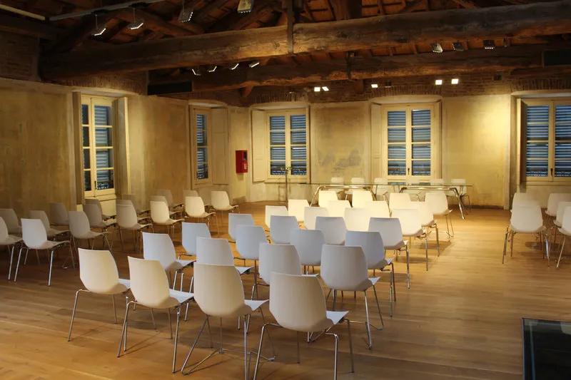
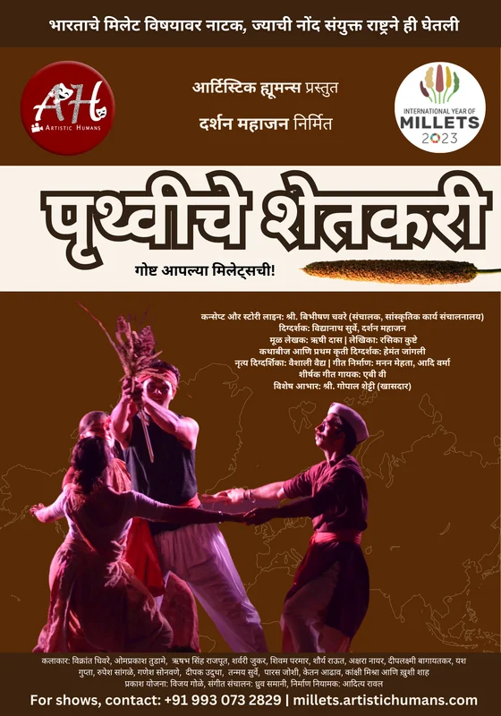
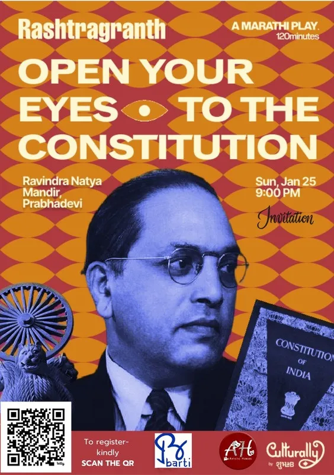
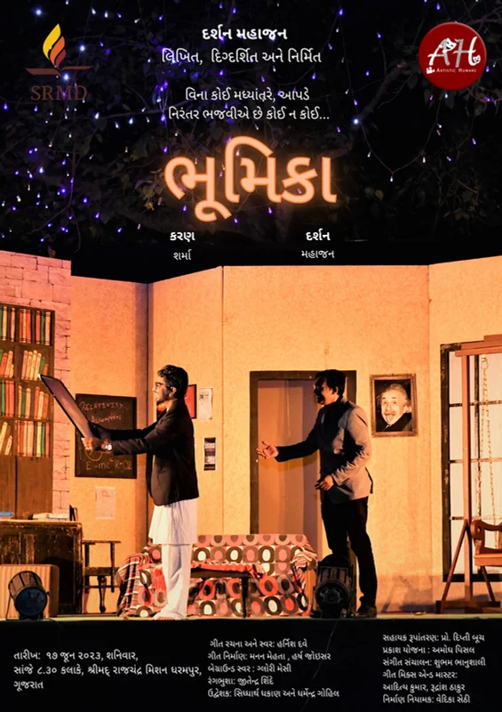
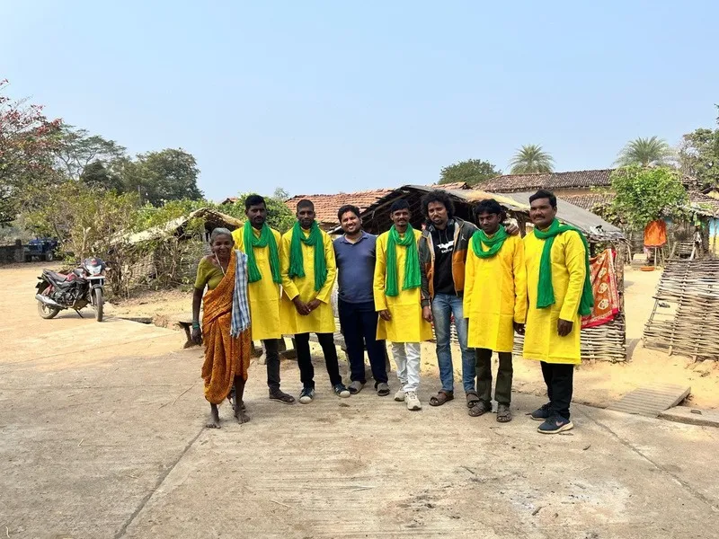
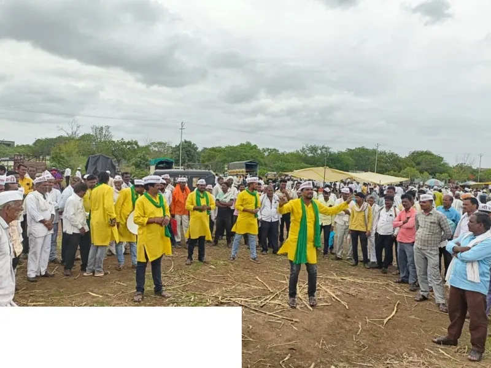
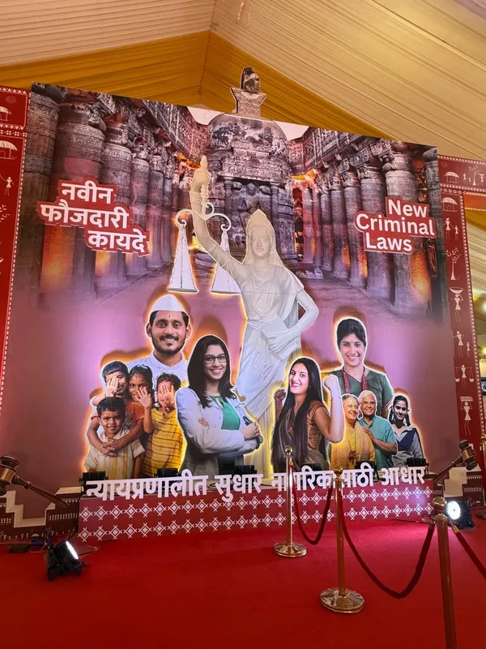
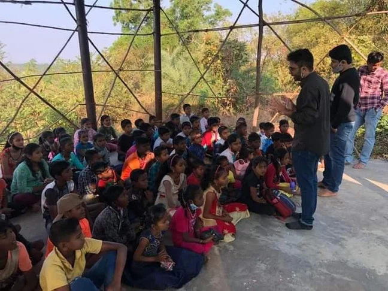
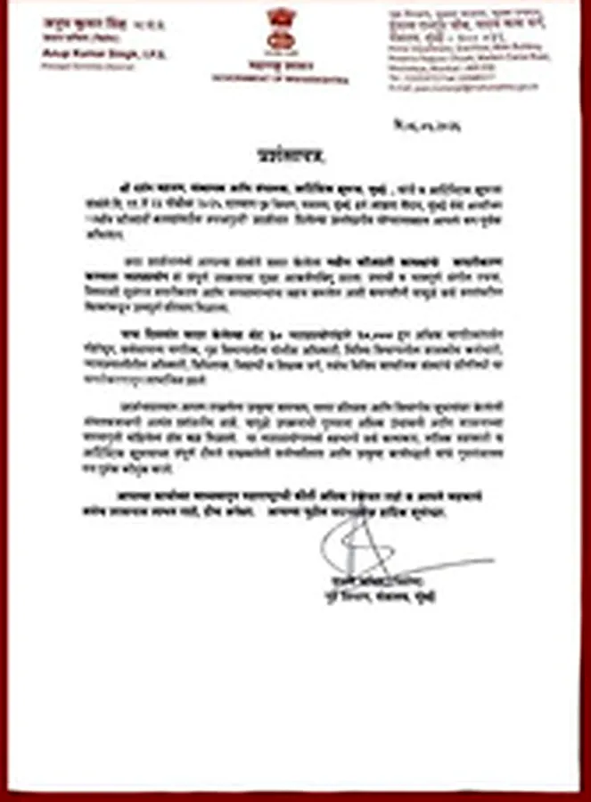
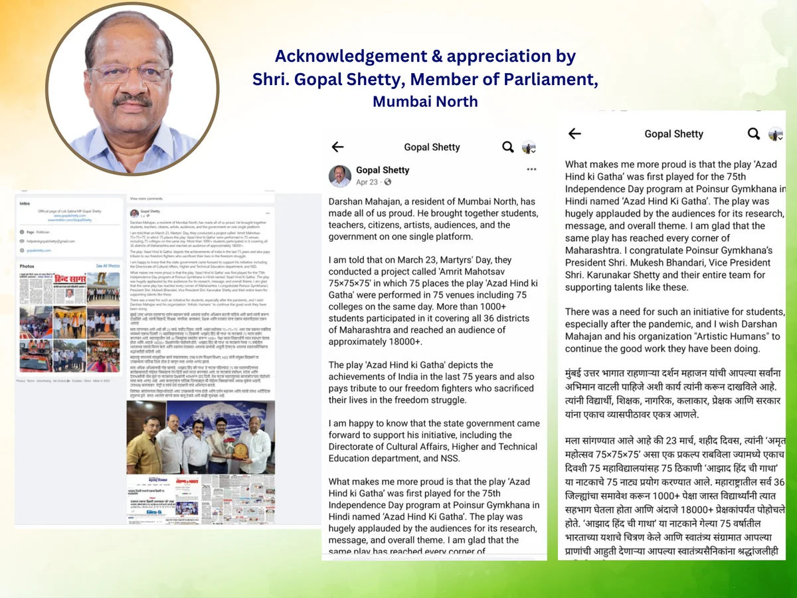

Curiosity to Creation
Art that moves people — and builds possibility. A Mumbai-based creative and social-impact movement using theatre, education, and cultural platforms to turn ideas into public value.
Who We Are
We are a team of creators and innovators, united by our love for art and a desire to break barriers. Our diverse operations include producing plays, conducting art research, curating immersive experiences, and hosting engaging workshops.
We collaborate with educational institutions, businesses, non-profits, and government bodies, forming impactful partnerships to bring our shared vision to life and make a measurable, positive impact on human lives.

The Vision
“Create a platform for humans to discover the artistic human within themselves.”
The Mission
“Through the medium of art, empower visionaries to create innovative solutions, build a community, help people evolve, inspire, and enable lasting change.”
A Practice Built on Five Pillars
Each pillar reinforces the others: productions create gripping stories, platforms build public access, and cross-sector partnerships expand measurable value.
Theatre & Productions
Original multilingual plays (Hindi, Gujarati, Marathi) driven by rigorous artist-led storytelling, historical depth, and experimental stagecraft.
Education & Youth
Theatre-based learning methodologies that build confidence, emotional literacy, communication, and leadership among students and tribal youth.
Civic & Social Impact
Large-scale public awareness projects connecting performing arts with public policy, constitutional literacy, environment, and community health.
Cultural Platforms
Recurring stages, festivals, and showcase platforms like Sanskrutik Kala Manch and K Se Kalakaar supporting emerging artists and grassroots creators.
Research & Collaboration
Strategic partnerships with government departments (Home, Agriculture, Culture, Education), universities, foundations, and corporate visionaries.
Landmark Projects
From breaking national records to receiving global recognition from the United Nations, our projects are designed for scale and deep social participation.
Amrit Mahotsav 75×75×75
75 shows in 75 institutions across 75 locations in a single day! Celebrated on Shaheed Day (March 23, 2023) with the Government of Maharashtra, uniting students, artists, colleges, and civic leaders on one synchronized platform.

Pruthvi Che Shetkari
The World's first dance-drama theatre production based on millets, created during the International Year of Millets 2023. Officially featured and recognized by the United Nations' Food and Agriculture Organization (FAO).

Rashtragranth
India's first play based on the Constitution of India. An ambitious live theatrical experience bringing together 40+ artists and technicians to translate constitutional history, democratic ideals, and fundamental rights into gripping drama.

Bhumika: The Journey Within
A critically acclaimed Hindi-Gujarati production exploring identity and existential reflection. It garnered 18 major accolades across national and state-level festivals, setting a high standard for contemporary experimental theatre.

नुक्कड़ नाटक: "वनाचे वचन"
Street play campaign in Gadchiroli, Maharashtra in partnership with Farmers for Forests. Used live grassroots theatre to inspire households to adopt clean cookstoves, protecting health, wild forests, and wildlife corridors.

नुक्कड़ नाटक: "झाडे लावा, झाडे जगवा!"
Supporting the 25-lakh tree plantation drive led by Mayank Gandhi in drought-prone Beed. Took theatre into farms, village squares, and schools to teach sustainable tree care and community stewardship.

New Criminal Laws Citizen Campaign
A high-impact citizen empowerment theatre tour commissioned by the Maharashtra Home Department to educate the public on legal reforms and civic safety over 5 intense days across public transit hubs and auditoriums.

Theatre with Tribal Youth
A multi-month immersive theatre programme conducted in partnership with Atharva Foundation for children of Gorai Village, nurturing self-expression and staging two full-length original productions.
Recognition as Trust
Government and institutional endorsements are treated as evidence of trust — and as a responsibility to create larger, more durable platforms for artists and citizens.

Government of Maharashtra

Member of Parliament (Mumbai North)
Millets Dance-Drama Feature
Darshan Mahajan
Founder • Theatre Practitioner • Social Entrepreneur
For over 15 years, Darshan has bridged original playwriting, acting, television, civic movements, and cultural institution-building. Having portrayed Mahatma Gandhi in the acclaimed production Yugpurush (which crossed 1,000+ shows worldwide) and spearheaded landmark public initiatives, he leads Artistic Humans with an artist-first, community-driven ethos.
Create • Collaborate • Commission • Curate
Whether you are an artist seeking a stage, an institution planning an impactful cultural campaign, or a partner ready to build public value through art.